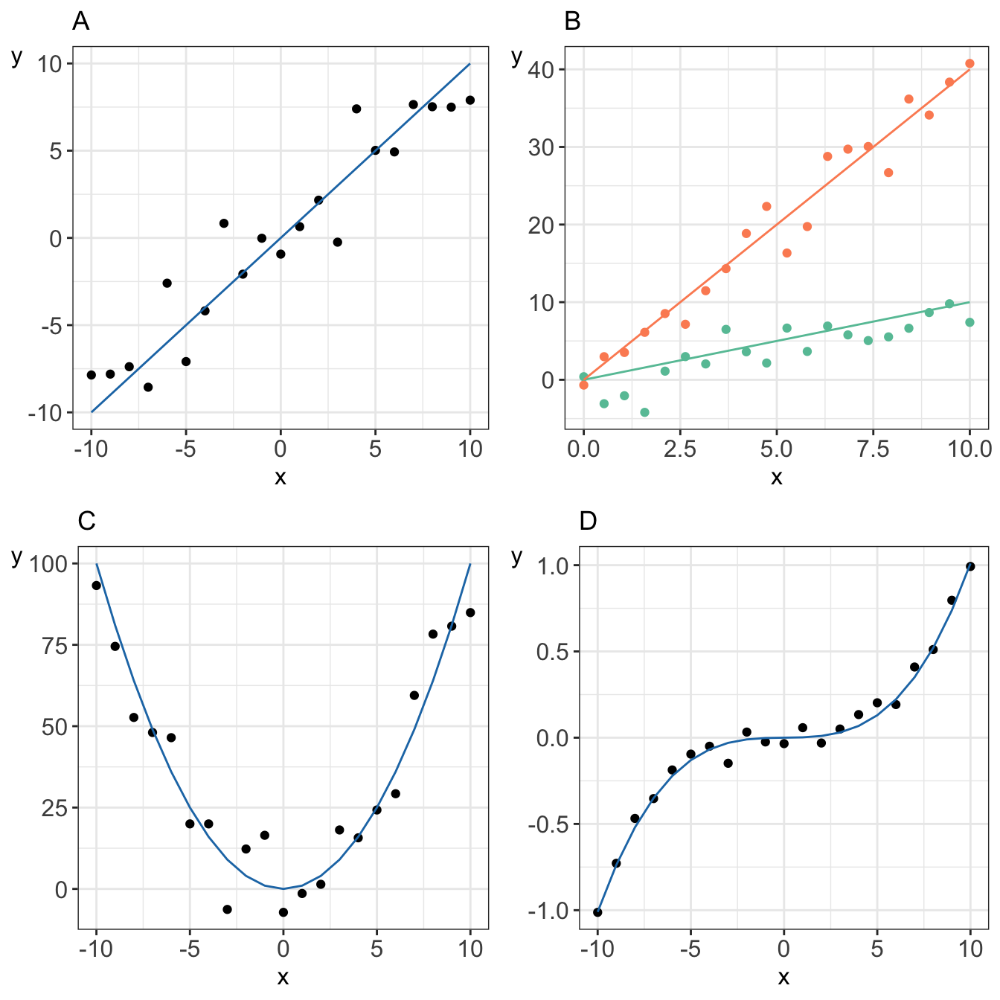
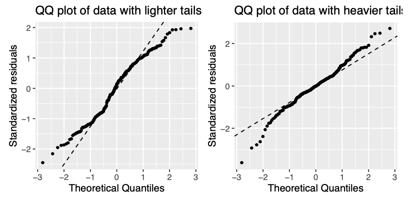

Code
data_diabetes %>%
ggplot(aes(x = height, y = weight)) +
geom_point() +
geom_smooth(method = "lm", se = FALSE) +
my.ggtheme +
xlab("height [m]") +
ylab("weight [kg]")With linear models we can answer questions such as:
data_diabetes %>%
ggplot(aes(x = height, y = weight)) +
geom_point() +
geom_smooth(method = "lm", se = FALSE) +
my.ggtheme +
xlab("height [m]") +
ylab("weight [kg]")Relationships in probability and statistics can generally be one of three things: deterministic, random, or statistical:

In an linear model we model (explain) the relationship between a single continuous variable \(Y\) and one or more variables \(X\). The \(X\) variables can be numerical, categorical or a mixture of both.
One very general form for the model would be: \[Y = f(X_1, X_2, \dots X_p) + \epsilon\] where \(f\) is some unknown function and \(\epsilon\) is the error in this representation.
For instance a simple linear regression through the origin is a simple linear model of the form \[Y_i = \beta \cdot x + \epsilon\] often used to express a relationship of one numerical variable to another, e.g. the calories burnt and the kilometers cycled.
Linear models can become quite advanced by including many variables, e.g. the calories burnt could be a function of the kilometers cycled, road incline and status of a bike, or the transformation of the variables, e.g. a function of kilometers cycled squared
Formally, linear models are a way of describing a response variable in terms of linear combination of predictor variables, i.e. expression constructed from a a set of terms by multiplying each term by a constant and/or adding the results.
For instance these are all models that can be constructed using linear combinations of predictors:

vs. an example of a non-linear model where parameter \(\beta\) appears in the exponent of \(x_i\)
There are many terms and notations used interchangeably:
Example 1.1 (Weight and plasma volume) Let’s look at the example data containing body weight (kg) and plasma volume (liters) for eight healthy men to see what the best-fitting straight line is.
Example data:
weight <- c(58, 70, 74, 63.5, 62.0, 70.5, 71.0, 66.0) # body weight (kg)
plasma <- c(2.75, 2.86, 3.37, 2.76, 2.62, 3.49, 3.05, 3.12) # plasma volume (liters)
The equation for the red line is: \[Y_i=0.086 + 0.044 \cdot x_i \quad for \;i = 1 \dots 8\] and in general: \[Y_i=\alpha + \beta \cdot x_i \quad for \; i = 1 \dots n\]
\[Y_i = \alpha + \beta \cdot x_i + \epsilon_i \tag{1.1}\] where:
Let \(\hat{y_i}=\hat{\alpha} + \hat{\beta}x_i\) be the prediction \(y_i\) based on the \(i\)-th value of \(x\):
Theorem 1.1 (Least squares estimates for a simple linear regression) \[\hat{\beta} = \frac{S_{xy}}{S_{xx}}\] \[\hat{\alpha} = \bar{y}-\frac{S_{xy}}{S_{xx}}\cdot \bar{x}\]
where:
Example 1.2 (Least squares) Let’s try least squares method to find coefficient estimates in the “body weight and plasma volume example”
# initial data
weight <- c(58, 70, 74, 63.5, 62.0, 70.5, 71.0, 66.0) # body weight (kg)
plasma <- c(2.75, 2.86, 3.37, 2.76, 2.62, 3.49, 3.05, 3.12) # plasma volume (liters)
# rename variables for convenience
x <- weight
y <- plasma
# mean values of x and y
x.bar <- mean(x)
y.bar <- mean(y)
# Sum of squares
Sxx <- sum((x - x.bar)^2)
Sxy <- sum((x-x.bar)*(y-y.bar))
# Coefficient estimates
beta.hat <- Sxy / Sxx
alpha.hat <- y.bar - Sxy/Sxx*x.bar
# Print estimated coefficients alpha and beta
print(alpha.hat)[1] 0.08572428print(beta.hat)[1] 0.04361534In R we can use lm(), the built-in function, to fit a linear regression model and we can replace the above code with one line
lm(plasma ~ weight)
Call:
lm(formula = plasma ~ weight)
Coefficients:
(Intercept) weight
0.08572 0.04362 
Is there a relationship between the response and the predictor?
e.s.e(\(\hat{\alpha}\)) and e.s.e(\(\hat{\beta}\))The most common hypothesis test involves testing the null hypothesis of:
alternative hypothesis \(H_a:\) there is some relationship between \(X\) and \(Y\)Mathematically, this corresponds to testing:
Under the null hypothesis \(H_0: \beta = 0\) 
t-statisticst-statistics follows Student’s t distribution with \(n-p\) degrees of freedomExample 1.3 (Hypothesis testing) Let’s look again at our example data. This time we will not only fit the linear regression model but also look a bit more closely at the R summary of the model
weight <- c(58, 70, 74, 63.5, 62.0, 70.5, 71.0, 66.0) # body weight (kg)
plasma <- c(2.75, 2.86, 3.37, 2.76, 2.62, 3.49, 3.05, 3.12) # plasma volume (liters)
model <- lm(plasma ~ weight)
print(summary(model))
Call:
lm(formula = plasma ~ weight)
Residuals:
Min 1Q Median 3Q Max
-0.27880 -0.14178 -0.01928 0.13986 0.32939
Coefficients:
Estimate Std. Error t value Pr(>|t|)
(Intercept) 0.08572 1.02400 0.084 0.9360
weight 0.04362 0.01527 2.857 0.0289 *
---
Signif. codes: 0 '***' 0.001 '**' 0.01 '*' 0.05 '.' 0.1 ' ' 1
Residual standard error: 0.2188 on 6 degrees of freedom
Multiple R-squared: 0.5763, Adjusted R-squared: 0.5057
F-statistic: 8.16 on 1 and 6 DF, p-value: 0.02893Estimate we see estimates of our model coefficients, \(\hat{\alpha}\) (intercept) and \(\hat{\beta}\) (slope, here weight), followed by their estimated standard errors, Std. Errorst-statistics to Student's t distribution with \(n-p = 8 - 2 = 6\) degrees of freedom (as we have 8 observations and two model parameters, \(\alpha\) and \(\beta\))2*pt(2.856582, df=6, lower=F)[1] 0.02893095While in simple linear regression it is feasible to arrive at the parameters estimates using calculus in more realistic settings of multiple regression, with more than one explanatory variable in the model, it is more efficient to use vectors and matrices to define the regression model.
Let’s rewrite our simple linear regression model \(Y_i = \alpha + \beta_i + \epsilon_i \quad i=1,\dots n\) into vector-matrix notation in 6 steps.
First we rename our \(\alpha\) to \(\beta_0\) and \(\beta\) to \(\beta_1\) as it is easier to keep tracking the number of model parameters this way
Then we notice that we actually have \(n\) equations such as: \[y_1 = \beta_0 + \beta_1 x_1 + \epsilon_1\] \[y_2 = \beta_0 + \beta_1 x_2 + \epsilon_2\] \[y_3 = \beta_0 + \beta_1 x_3 + \epsilon_3\] \[\dots\] \[y_n = \beta_0 + \beta_1 x_n + \epsilon_n\]
We group all \(Y_i\) and \(\epsilon_i\) into column vectors: \(\mathbf{Y}=\begin{bmatrix} y_1 \\ y_2 \\ \vdots \\ y_{n} \end{bmatrix}\) and \(\boldsymbol\epsilon=\begin{bmatrix} \epsilon_1 \\ \epsilon_2 \\ \vdots \\ \epsilon_{n} \end{bmatrix}\)
We stack two parameters \(\beta_0\) and \(\beta_1\) into another column vector:\[\boldsymbol\beta=\begin{bmatrix} \beta_0 \\ \beta_1 \end{bmatrix}\]
We append a vector of ones with the single predictor for each \(i\) and create a matrix with two columns called design matrix \[\mathbf{X}=\begin{bmatrix} 1 & x_1 \\ 1 & x_2 \\ \vdots & \vdots \\ 1 & x_{n} \end{bmatrix}\]
We write our linear model in a vector-matrix notations as: \[\mathbf{Y} = \mathbf{X}\boldsymbol\beta + \boldsymbol\epsilon\]
Definition 1.1 (vector matrix form of the linear model) The vector-matrix representation of a linear model with \(p-1\) predictors can be written as \[\mathbf{Y} = \mathbf{X}\boldsymbol\beta + \boldsymbol\epsilon\]
where:
In full, the above vectors and matrix have the form:
\(\mathbf{Y}=\begin{bmatrix} y_1 \\ y_2 \\ \vdots \\ y_{n} \end{bmatrix}\) \(\boldsymbol\beta=\begin{bmatrix} \beta_0 \\ \beta_1 \\ \vdots \\ \beta_{p} \end{bmatrix}\) \(\boldsymbol\epsilon=\begin{bmatrix} \epsilon_1 \\ \epsilon_2 \\ \vdots \\ \epsilon_{n} \end{bmatrix}\) \(\mathbf{X}=\begin{bmatrix} 1 & x_{1,1} & \dots & x_{1,p-1} \\ 1 & x_{2,1} & \dots & x_{2,p-1} \\ \vdots & \vdots & \vdots & \vdots \\ 1 & x_{n,1} & \dots & x_{n,p-1} \end{bmatrix}\)
Theorem 1.2 (Least squares in vector-matrix notation) The least squares estimates for a linear regression of the form: \[\mathbf{Y} = \mathbf{X}\boldsymbol\beta + \boldsymbol\epsilon\]
is given by: \[\hat{\mathbf{\beta}}= (\mathbf{X}^T\mathbf{X})^{-1}\mathbf{X}^T\mathbf{Y}\]
Example 1.4 (vector-matrix-notation) Following the above definition we can write the “weight - plasma volume model” as: \[\mathbf{Y} = \mathbf{X}\boldsymbol\beta + \boldsymbol\epsilon\] where:
\(\mathbf{Y}=\begin{bmatrix} 2.75 \\ 2.86 \\ 3.37 \\ 2.76 \\ 2.62 \\ 3.49 \\ 3.05 \\ 3.12 \end{bmatrix}\)
\(\boldsymbol\beta=\begin{bmatrix} \beta_0 \\ \beta_1 \end{bmatrix}\) \(\boldsymbol\epsilon=\begin{bmatrix} \epsilon_1 \\ \epsilon_2 \\ \vdots \\ \epsilon_{8} \end{bmatrix}\) \(\mathbf{X}=\begin{bmatrix} 1 & 58.0 \\ 1 & 70.0 \\ 1 & 74.0 \\ 1 & 63.5 \\ 1 & 62.0 \\ 1 & 70.5 \\ 1 & 71.0 \\ 1 & 66.0 \\ \end{bmatrix}\)
and we can estimate model parameters using \(\hat{\mathbf{\beta}}= (\mathbf{X}^T\mathbf{X})^{-1}\mathbf{X}^T\mathbf{Y}\).
We can do it by hand or in R as follows:
n <- length(plasma) # no. of observation
Y <- as.matrix(plasma, ncol=1)
X <- cbind(rep(1, length=n), weight)
X <- as.matrix(X)
# print Y and X to double-check that the format is according to the definition
print(Y) [,1]
[1,] 2.75
[2,] 2.86
[3,] 3.37
[4,] 2.76
[5,] 2.62
[6,] 3.49
[7,] 3.05
[8,] 3.12print(X) weight
[1,] 1 58.0
[2,] 1 70.0
[3,] 1 74.0
[4,] 1 63.5
[5,] 1 62.0
[6,] 1 70.5
[7,] 1 71.0
[8,] 1 66.0# least squares estimate
# solve() finds inverse of matrix
beta.hat <- solve(t(X)%*%X)%*%t(X)%*%Y
print(beta.hat) [,1]
0.08572428
weight 0.04361534Example 1.5 (Prediction and intervals) Let’s:
# fit regression model
model <- lm(plasma ~ weight)
print(summary(model))
Call:
lm(formula = plasma ~ weight)
Residuals:
Min 1Q Median 3Q Max
-0.27880 -0.14178 -0.01928 0.13986 0.32939
Coefficients:
Estimate Std. Error t value Pr(>|t|)
(Intercept) 0.08572 1.02400 0.084 0.9360
weight 0.04362 0.01527 2.857 0.0289 *
---
Signif. codes: 0 '***' 0.001 '**' 0.01 '*' 0.05 '.' 0.1 ' ' 1
Residual standard error: 0.2188 on 6 degrees of freedom
Multiple R-squared: 0.5763, Adjusted R-squared: 0.5057
F-statistic: 8.16 on 1 and 6 DF, p-value: 0.02893# find confidence intervals for the model coefficients
confint(model) 2.5 % 97.5 %
(Intercept) -2.419908594 2.59135716
weight 0.006255005 0.08097567# predict plasma volume for a new observation of 60 kg
# we have to create data frame with a variable name matching the one used to build the model
new.obs <- data.frame(weight = 60)
predict(model, newdata = new.obs) 1
2.702645 # find prediction intervals
prediction.interval <- predict(model, newdata = new.obs, interval = "prediction")
print(prediction.interval) fit lwr upr
1 2.702645 2.079373 3.325916# plot the original data, fitted regression and predicted value
plot(weight, plasma, pch=19, xlab="weight [kg]", ylab="plasma [l]", ylim=c(2,4))
lines(weight, model$fitted.values, col="red") # fitted model in red
points(new.obs, predict(model, newdata = new.obs), pch=19, col="blue") # predicted value at 60kg
segments(60, prediction.interval[2], 60, prediction.interval[3], lty = 3) # add prediction interval
Definition 1.2 (\(R^2\)) A simple but useful measure of model fit is given by \[R^2 = 1 - \frac{RSS}{TSS}\] where:
Theorem 1.3 (\(R^2\)) In the case of simple linear regression:
Model 1: \(Y_i = \beta_0 + \beta_1x + \epsilon_i\) \[R^2 = r^2\] where:
Theorem 1.4 (\(R^2(adj)\)) For any multiple linear regression \[Y_i = \beta_0 + \beta_1x_{1i} + \dots + \beta_{p-1}x_{(p-1)i} + \epsilon_i\] \(R^2(adj)\) is defined as \[R^2(adj) = 1-\frac{\frac{RSS}{n-p-1}}{\frac{TSS}{n-1}}\] where
\(R^2(adj)\) can also be calculated from \(R^2\): \[R^2(adj) = 1 - (1-R^2)\frac{n-1}{n-p-1}\]
Up until now we were fitting models and discussed how to assess the model fit. Before making use of a fitted model for explanation or prediction, it is wise to check that the model provides an adequate description of the data. Informally we have been using box plots and scatter plots to look at the data. There are however formal definitions of the assumptions.
Assumption A: The deterministic part of the model captures all the non-random structure in the data
Assumption B: the scale of variability of the errors is constant at all values of the explanatory variables
Assumption C: the errors are independent
Assumptions D: the errors are normally distributed
Assumption E: the values of the explanatory variables are recorded without error
Residuals, \(\hat{\epsilon_i} = y_i - \hat{y_i}\) are the main ingredient to check model assumptions. We use plots such as:
Let’s fit a simple model to predict BMI given waist for the diabetes study and see if the model meets the assumptions of linear models.
# fit simple linear regression model
model <- lm(BMI ~ waist, data = data_diabetes)
# plot diagnostic plots of the linear model
# by default plot(model) calls four diagnostics plots
# par() divides plot window in 2 x 2 grid
par(mfrow=c(2,2))
plot(model)Examples of assumptions not being met



Let’s remove some observation with higher Cook’s distance from protein data set, re-fit our model and compare the diagnostics plots
# observations to be removed (based on Residuals vs. Leverage plot)
obs <- c(13, 78, 83, 84)
# fit models removing observations
data_diabetes_flr <- data_diabetes[-obs, ]
model_flr <- lm(BMI ~ waist, data = data_diabetes_flr)
# plot diagnostics plot
par(mfrow=c(2,2))
plot(model_flr)